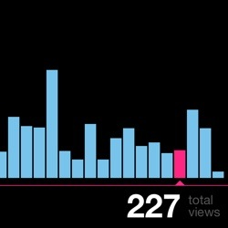

f/stats
flickr stats for iPhone
Access to your flickr stats while on the go.

flickr pro account required
Graph View
NEW
Introducing graph view, available when the device is rotated to
landscape orientation. Graph view allows you to see trends
in daily total views. Slide or tap a day in the graph to see the
total views.

f/stats was created by long-time flickr fan, Shawn Veader